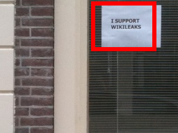
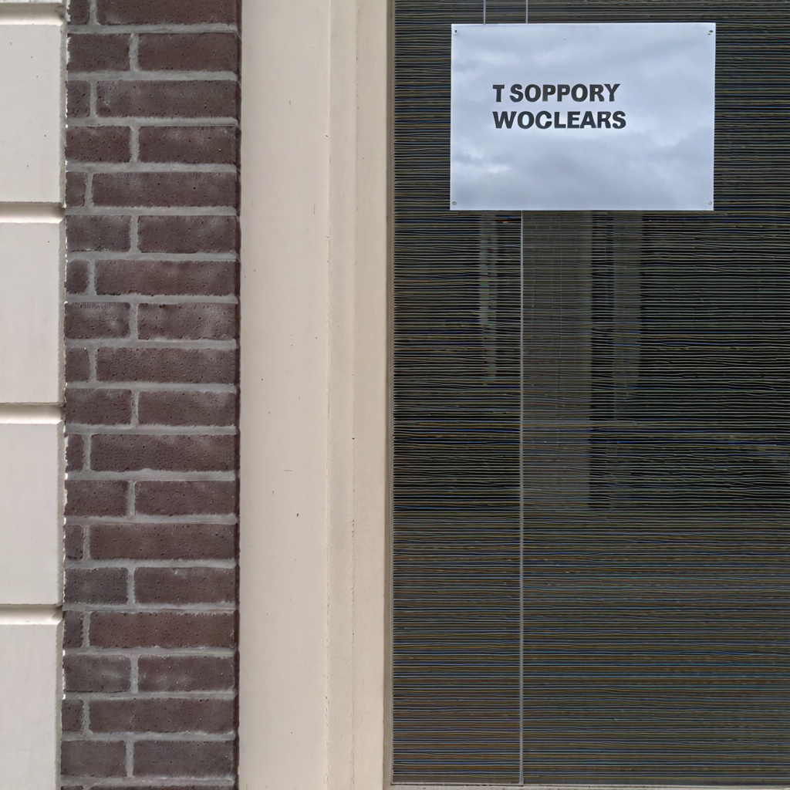
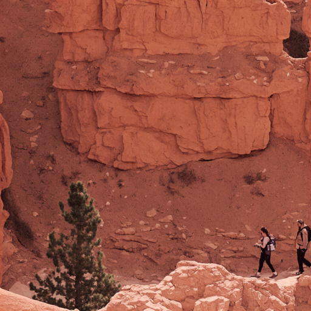

The Power of Context: How Multimodality Improves Image Super-Resolution

We propose a novel approach that leverages the rich contextual information available in multiple modalities --including depth, segmentation, edges, and text prompts -- to learn a powerful generative prior for SISR within a diffusion model framework. We introduce a flexible network architecture that effectively fuses multimodal information, accommodating an arbitrary number of input modalities without requiring significant modifications to the diffusion process. Crucially, we mitigate hallucinations, often introduced by text prompts, by using spatial information from other modalities to guide regional text-based conditioning. Each modality's guidance strength can also be controlled independently, allowing steering outputs toward different directions, such as increasing bokeh through depth or adjusting object prominence via segmentation. Extensive experiments demonstrate that our model surpasses state-of-the-art generative SISR methods, achieving superior visual quality and fidelity.
Starting with a low-resolution (LR) image, we extract modalities like depth and semantic segmentation maps. These modalities are encoded into tokens and transformed into multimodal latent tokens ($m$). Our diffusion model uses these tokens and the LR input to generate a high-resolution (SR) output. A multimodal classifier-free guidance m-cfg refines the SR image for enhanced quality.

| Inputs | Outputs | ||||||
|---|---|---|---|---|---|---|---|
|
Two people walk along a narrow path carved into the
reddish-orange sandstone cliffs. A small evergreen tree grows in the foreground near the base of
the cliff \dots
|
|||||||
| LR | Caption | Patch 1 | PASD (Zoomed) | SeeSR (Zoomed) | SUPIR (Zoomed) | MMSR (Zoomed) | |
|
Photo of a mining town nestled on a hillside, autumnal
colors. The buildings are predominantly low-slung structures with metal roofs, some \dots
|
|||||||
| LR | Caption | Patch 1 | PASD (Zoomed) | SeeSR (Zoomed) | SUPIR (Zoomed) | MMSR (Zoomed) | |
|
Photo of a weathered exterior wall detail, grunge, aged. A
rusty metal lamp is mounted on a dark vertical beam against a crumbling ochre and brown stucco
wall \dots
|
|||||||
| LR | Caption | Patch 1 | PASD (Zoomed) | SeeSR (Zoomed) | SUPIR (Zoomed) | MMSR (Zoomed) | |
|  |
Photo of a window with a sign, brick wall. A simple white
rectangular sign with black text reading "I SUPPORT WIKILEAKS" is taped \dots
|
 | |||||
| LR | Caption | Patch 1 | PASD (Zoomed) | SeeSR (Zoomed) | SUPIR (Zoomed) | MMSR (Zoomed) | |
|
Photo of a high-detail stone sculpture, sepia toned. The
sculpture depicts Jesus Christ seated, his hands raised in a gesture of blessing \dots
|
|||||||
| LR | Caption | Patch 1 | PASD (Zoomed) | SeeSR (Zoomed) | SUPIR (Zoomed) | MMSR (Zoomed) | |
Image caption result comparisons between different prompts. We show that our prompt that utilizes in-context learning is stable at most cases and can always get more detailed image captions without useless procedural words.
| Prompt | Describe this image and its style in a very detailed manner | Write a four sentence caption in English for this image. In the first sentence describe the style and type (painting, photo, etc) of the image. Describe in the remaining sentences the contents and composition of the image. Only use language that would be used to prompt a text to image model. Do not include usage. Comma separate keywords rather than using "or". Precise composition is important. Avoid phrases like "Here is...". Good examples are: "Photo of an alien woman with a glowing halo standing on top of a mountain, wearing a white robe and silver mask in the futuristic style with futuristic design, sky background, soft lighting, dynamic pose, a sense of future technology, a science fiction movie scene rendered in the Unreal Engine." |
|---|---|---|
|
**Option 1 (Short & Evocative):** Textures of twilight. **Option 2 (Descriptive):** Smooth, windswept curves of snow and shadow paint an abstract landscape in dusky hues. **Option 3 (Focusing on Light):** The fading light reveals the delicate textures etched onto the snowy slopes... |
Photo of a mountainous landscape, abstract, textured. The image features sweeping curves of snow and ice, creating a dramatic diagonal composition. Shades of purple and blue dominate the color palette, lending a cool and ethereal atmosphere. The texture is highly detailed, showing the granular nature of the snow and the sculpted forms of the terrain. | |
| a close-up view of a car's hood, reflecting a sunlit scene. The hood is slightly wet, indicated by the subtle sheen of water droplets that catch and scatter the light. The reflection is not sharp or complete, but rather a shimmering impression of the surrounding environment... | Photorealistic image, exterior shot, modern architecture. A sleek dark gray apartment building with balconies is partially visible through lush green foliage. The foreground features a wet car hood reflecting sunlight. The composition emphasizes a shallow depth of field, focusing on the reflection and blurring the background. | |
|  | Here's a detailed description of the image and its style: The image is a landscape photograph, seemingly taken in a canyon or arid desert region, focusing on two hikers traversing a rocky path. Composition and Subject Matter: ... | Photo of hikers in a canyon, Bryce Canyon National Park. Two people walk along a narrow path carved into the reddish-orange sandstone cliffs. A small evergreen tree grows in the foreground near the base of the cliff. The composition is a high-angle view, showcasing the scale of the canyon walls and the small figures of the hikers. |
@inproceedings{mei2025mmsr,
title={The Power of Context: How Multimodality Improves Image Super-Resolution},
author={Mei, Kangfu and Talebi, Hossein and Ardakani, Mojtaba and Patel, Vishal M and Milanfar, Peyman and Delbracio, Mauricio},
year={2025},
booktitle={Proceedings of the IEEE/CVF Conference on Computer Vision and Pattern Recognition},
}